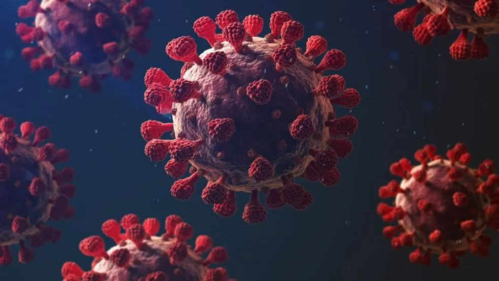

O ano de 2021 foi um período de continuação das complexidades que emergiram em anos anteriores, enquanto o mundo tentava lidar com os desafios impostos pela pandemia de COVID-19. Embora as esperanças de um retorno à normalidade tenham sido alimentadas pela distribuição de vacinas, muitas questões globais e locais continuaram a demandar atenção e ação.
Vacinação e Luta contra a COVID-192021 testemunhou a implementação em larga escala de programas de vacinação contra a COVID-19. Várias vacinas eficazes foram desenvolvidas em tempo recorde e distribuídas em todo o mundo, oferecendo esperança no controle da propagação do vírus. No entanto, desigualdades no acesso às vacinas entre países ricos e pobres persistiram, destacando a necessidade de uma cooperação global mais sólida.

Mudanças Políticas e TransiçõesA posse de Joe Biden como 46º presidente dos Estados Unidos marcou uma mudança significativa na política global. Sua administração se comprometeu a abordar questões como as mudanças climáticas, relações internacionais conturbadas e o combate às desigualdades. Além disso, várias outras nações enfrentaram transições políticas, cada uma com suas implicações únicas para as políticas nacionais e internacionais.
Desafios Climáticos e AmbientaisEventos climáticos extremos continuaram a ocorrer em 2021, reforçando a urgência de abordar as mudanças climáticas. O relatório do Painel Intergovernamental sobre Mudanças Climáticas (IPCC) alertou para a necessidade de ações imediatas e abrangentes para limitar o aquecimento global. Inundações, incêndios florestais e outros desastres naturais destacaram a vulnerabilidade de várias regiões e a importância da resiliência.
Avanços TecnológicosNa esfera tecnológica, 2021 trouxe avanços notáveis. A disseminação contínua do trabalho remoto impulsionou a inovação nas ferramentas de comunicação virtual e colaboração online. Além disso, a ascensão das criptomoedas e as discussões sobre regulamentação financeira capturaram a atenção do mundo, redefinindo as conversas sobre economia e finanças. Desafios Sociais e Culturais Questões sociais e culturais também estiveram em destaque em 2021. Movimentos como o Black Lives Matter continuaram a promover conversas sobre justiça racial e igualdade. A conscientização sobre saúde mental aumentou, com mais atenção sendo dada ao impacto psicológico da pandemia e à necessidade de apoio adequado. Conclusão O ano de 2021 foi um capítulo complexo e multifacetado na história recente. Enquanto o mundo buscava se recuperar da pandemia, uma gama diversificada de desafios exigiu a colaboração global e a adaptação constante. À medida que o ano chegava ao fim, as lições aprendidas em 2021 serviram como base para a preparação de um futuro incerto, enfatizando a importância da cooperação, resiliência e ação coletiva.